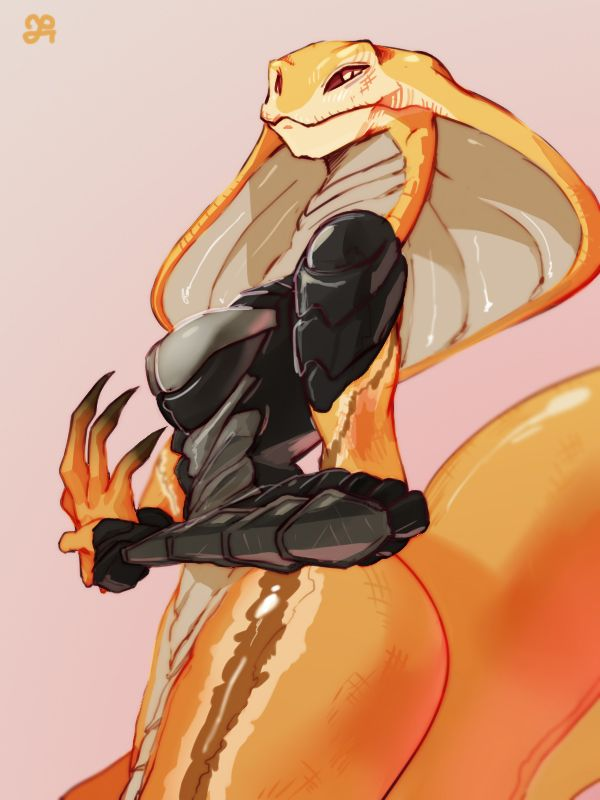
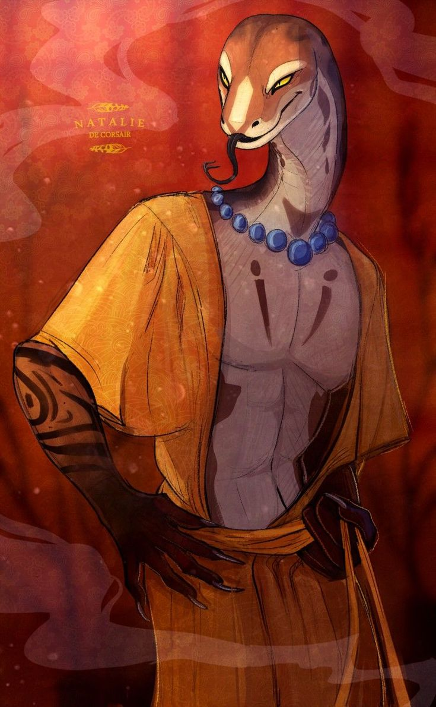
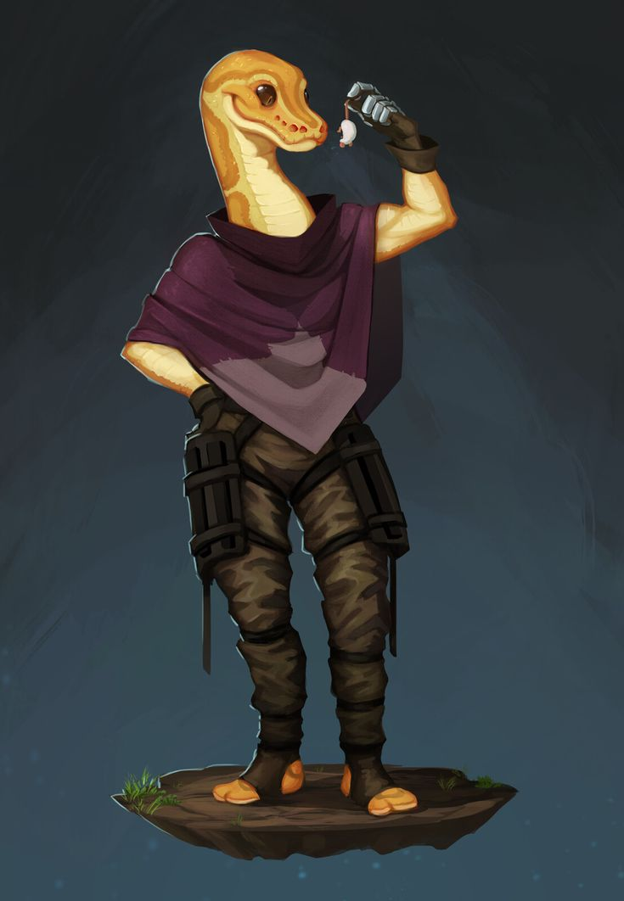
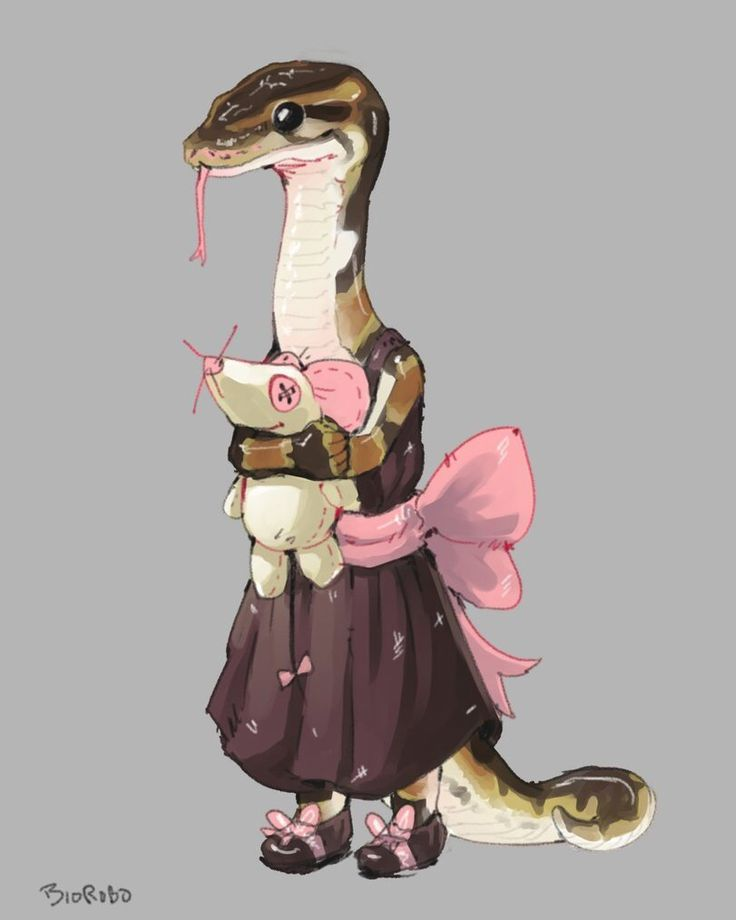

A Família Alere é a linhagem responsável pelo financiamento do Reino Flutuante. Seus antepassados chegaram ao poder através de uma escolha que ainda hoje ecoa em segredo pelos corredores da corte: traíram a confiança dos Phyton e ofereceram seu apoio aos Bico de Ferro no momento decisivo da revolução. Foi um cálculo, não uma convicção — e esse mesmo cálculo garantiu à família uma posição prestigiosa que se mantém, geração após geração, até os dias de hoje.
✦ CHEFIA FINANCEIRA

✦ família alere
Angara Alere
Chefe da família e contadora oficial da Rainha, Angara é a prova viva de que o Reino Flutuante nunca esqueceu o preço da própria fundação — só aprendeu a cobrá-lo dos outros. Marquesa de [Inserir], ela administra o tesouro real com a mesma frieza que seus antepassados usaram para escolher o lado vencedor. Nada entra ou sai dos cofres do reino sem que Angara já tenha calculado o resultado três movimentos à frente.

✦ família alere
Shiro Alere
Onde Angara comanda os números, Shiro comanda as ruas — é ele quem fiscaliza e gerencia as empresas, lojas e negócios que movimentam o Reino Flutuante. Conde de [Inserir], seu sorriso fácil e maneiras charmosas escondem um faro tão afiado quanto o da esposa para farejar quem tenta enganar a coroa. Pai de Yuki e Yumi, é ele quem garante que o império construído sobre uma escolha antiga continue de pé.
✦ HERDEIRAS

✦ família alere
Yuki Alere
A filha mais velha do casal, Yuki parece ter herdado pouco da elegância calculista dos pais — prefere caçar sua própria comida a decorar etiqueta de corte. Enquanto Angara e Shiro planejam décadas à frente, Yuki ainda está descobrindo o próprio apetite, no sentido mais literal possível.

✦ família alere
Yumi Alere
A caçula da família, Yumi ainda não faz ideia do peso que o sobrenome Alere carrega — para ela, os corredores do palácio são só um lugar enorme para brincar, e seu bichinho de pano é o único conselheiro de que precisa por enquanto.